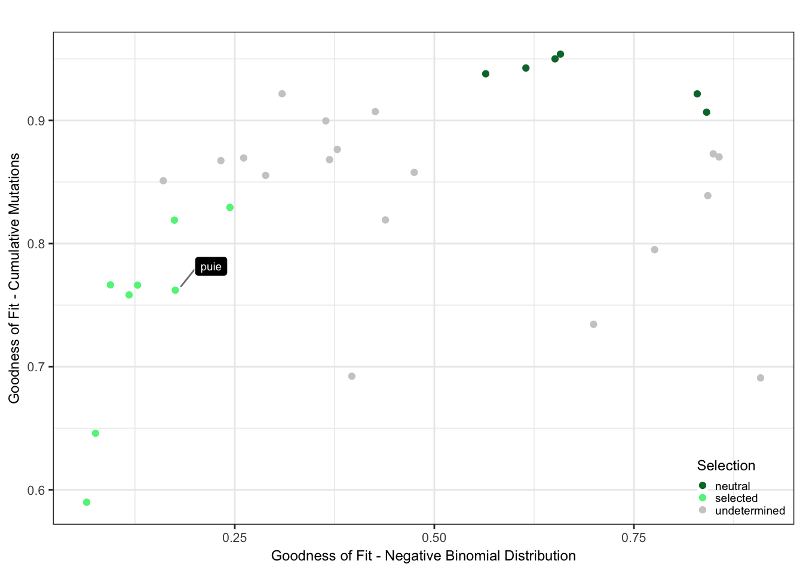
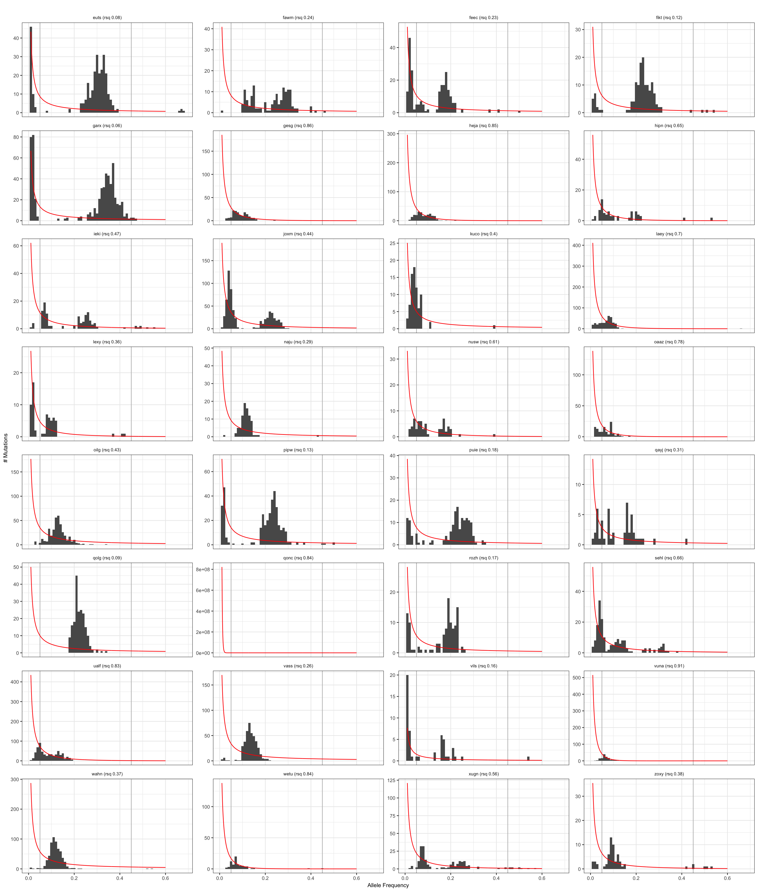
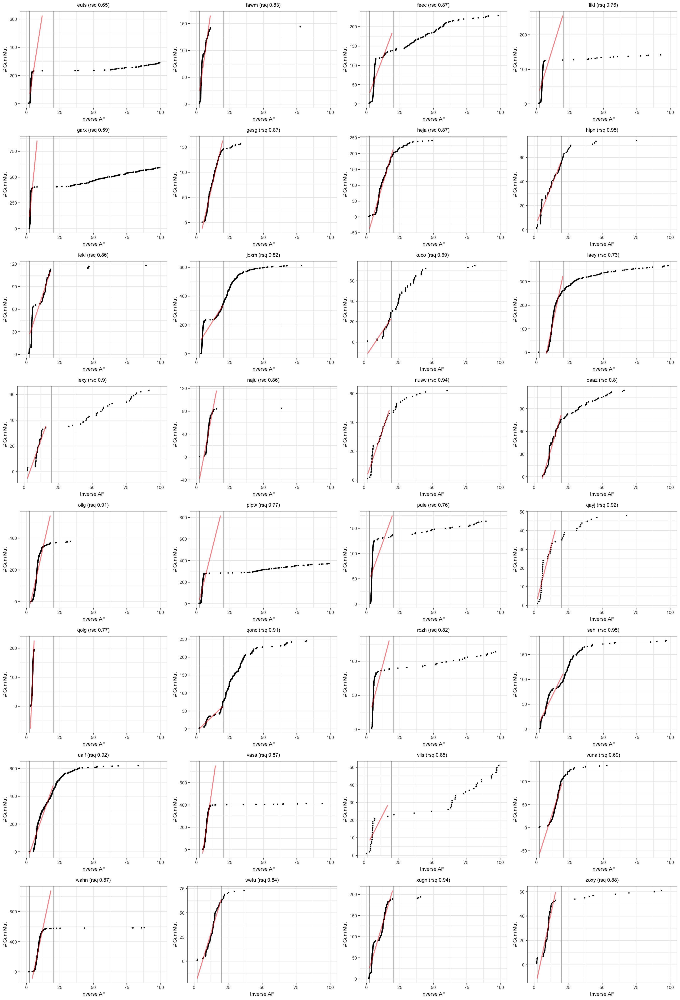

Last updated: 2018-09-02
workflowr checks: (Click a bullet for more information) ✔ R Markdown file: up-to-date
Great! Since the R Markdown file has been committed to the Git repository, you know the exact version of the code that produced these results.
✔ Environment: empty
Great job! The global environment was empty. Objects defined in the global environment can affect the analysis in your R Markdown file in unknown ways. For reproduciblity it’s best to always run the code in an empty environment.
✔ Seed:
set.seed(20180807)
The command set.seed(20180807) was run prior to running the code in the R Markdown file. Setting a seed ensures that any results that rely on randomness, e.g. subsampling or permutations, are reproducible.
✔ Session information: recorded
Great job! Recording the operating system, R version, and package versions is critical for reproducibility.
✔ Repository version: f5a4631
wflow_publish or wflow_git_commit). workflowr only checks the R Markdown file, but you know if there are other scripts or data files that it depends on. Below is the status of the Git repository when the results were generated:
Ignored files:
Ignored: .DS_Store
Ignored: .Rhistory
Ignored: .Rproj.user/
Ignored: .vscode/
Ignored: code/.DS_Store
Ignored: data/raw/
Ignored: src/.DS_Store
Ignored: src/Rmd/.Rhistory
Untracked files:
Untracked: Snakefile_clonality
Untracked: Snakefile_somatic_calling
Untracked: code/analysis_for_garx.Rmd
Untracked: code/selection/
Untracked: code/yuanhua/
Untracked: data/canopy/
Untracked: data/cell_assignment/
Untracked: data/de_analysis_FTv62/
Untracked: data/donor_info_070818.txt
Untracked: data/donor_info_core.csv
Untracked: data/donor_neutrality.tsv
Untracked: data/exome-point-mutations/
Untracked: data/fdr10.annot.txt.gz
Untracked: data/human_H_v5p2.rdata
Untracked: data/human_c2_v5p2.rdata
Untracked: data/human_c6_v5p2.rdata
Untracked: data/neg-bin-rsquared-petr.csv
Untracked: data/neutralitytestr-petr.tsv
Untracked: data/sce_merged_donors_cardelino_donorid_all_qc_filt.rds
Untracked: data/sce_merged_donors_cardelino_donorid_all_with_qc_labels.rds
Untracked: data/sce_merged_donors_cardelino_donorid_unstim_qc_filt.rds
Untracked: data/sces/
Untracked: data/selection/
Untracked: data/simulations/
Untracked: data/variance_components/
Untracked: figures/
Untracked: output/differential_expression/
Untracked: output/donor_specific/
Untracked: output/line_info.tsv
Untracked: output/nvars_by_category_by_donor.tsv
Untracked: output/nvars_by_category_by_line.tsv
Untracked: output/variance_components/
Untracked: references/
Untracked: tree.txt
| File | Version | Author | Date | Message |
|---|---|---|---|---|
| html | f0ed980 | davismcc | 2018-08-31 | Build site. |
| html | ca3438f | davismcc | 2018-08-29 | Build site. |
| html | e573f2f | davismcc | 2018-08-27 | Build site. |
| html | 7888ad3 | davismcc | 2018-08-26 | Adding untracked html files |
| Rmd | 0590541 | davismcc | 2018-08-25 | Adding selection models analysis from Daniel Kunz |
knitr::opts_chunk$set(echo = TRUE)
library(ggplot2)
library(viridis)
library(ggrepel)
library(neutralitytestr)
library(cowplot)
library(plyr)
dir.create("figures/selection", showWarnings = FALSE, recursive = TRUE)Load the call set and extract the allele frequencies which used for the fits of the selection models.
filteredAF = read.table("data/exome-point-mutations/high-vs-low-exomes.v62.ft.filt_lenient-alldonors.txt.gz",
header = TRUE, stringsAsFactors = FALSE)
mut_list = data.frame("sampleID" = filteredAF$donor_short_id,
"af_fibro" = filteredAF$nALT_fibro/(filteredAF$nREF_fibro + filteredAF$nALT_fibro),
"af_ips" = filteredAF$nALT_ips/(filteredAF$nREF_ips + filteredAF$nALT_ips),
"chr" = filteredAF$chrom,
"pos" = filteredAF$pos,
"ref" = filteredAF$ref,
"mut" = filteredAF$alt,
"mutID" = paste(filteredAF$chrom, filteredAF$pos, filteredAF$ref, filteredAF$alt, sep = "_"))
mut_list = mut_list[order(mut_list$sampleID),]
write.table(mut_list, "data/selection/ips-fibro-AF.tsv",
row.names = FALSE, quote = FALSE, sep = "\t")
mut_list = data.frame("sampleID" = filteredAF$donor_short_id,
"af" = filteredAF$nALT_fibro/(filteredAF$nREF_fibro + filteredAF$nALT_fibro),
"chr" = filteredAF$chrom,
"pos" = filteredAF$pos,
"ref" = filteredAF$ref,
"mut" = filteredAF$alt)
mut_list = mut_list[order(mut_list$sampleID),]
write.table(mut_list, "data/selection/full-AF.tsv", row.names = FALSE,
quote = FALSE, sep = "\t")
dir.create("data/selection/AF", showWarnings = FALSE)
for (sampleID in unique(mut_list$sampleID)) {
sub_mut_list = mut_list[mut_list$sampleID == sampleID,]
sub_mut_list = sub_mut_list[sub_mut_list$af >= 0.03,]
write.table(sub_mut_list, paste0("data/selection/AF/AF-", sampleID, ".tsv"),
row.names = FALSE, quote = FALSE, sep = "\t")
}Please open the Mathematica notebook (code/selection/fit-dist.nb) and run it by hand (the outputs generated are used in subsequent cells). The notebook fits the negative binomial model for neutral evolution.
In case you do not have access to Mathematica to run the notebook, we provide its output files in data/selection/neg-bin-params-fit.csv and data/selection/neg-bin-rsquared-fit.csv.
The code below runs the neutralitytestr model.
fmin = 0.05
fmax = 0.45
petrAF = read.table("data/selection/full-AF.tsv", sep = "\t", header = T)
donors = unique(as.vector(petrAF$sampleID))
getSampleNtrtest <- function(afDF, sampleID, fmin, fmax){
# run neutralitytestr on a single sample
VAFsample = afDF[afDF$sampleID == sampleID, "af"]
out = neutralitytest(VAFsample, fmin = fmin, fmax = fmax)
results = c(sampleID,
out$area$metric, out$area$pval,
out$Dk$metric, out$Dk$pval,
out$meanDist$metric, out$meanDist$pval,
out$rsq$metric, out$rsq$pval,
out$mutation.rate)
names(results) = c("sampleID",
"area", "pval_area",
"Dk", "pval_Dk",
"meanDist", "pval_meanDist",
"rsq", "pval_rsq",
"mutrate")
return(results)
}
ntrtestrPetrout = t(sapply(donors,
function(sampleID) getSampleNtrtest(
petrAF, sampleID, fmin, fmax)))
write.table(ntrtestrPetrout, "data/selection/neutralitytestr.tsv",
sep = "\t", quote = FALSE, row.names = FALSE)Plot the selection classification based on the goodness of fit results from neutrality testr and the negative binomial like fit.
ntrtestrPetr = read.table("data/selection/neutralitytestr.tsv",
stringsAsFactors = FALSE, header = TRUE)
negbinfitPetr = read.table("data/selection/neg-bin-rsquared-fit.csv",
stringsAsFactors = FALSE, header = TRUE, sep = ",")
negbinfitPetr$sampleID = negbinfitPetr$fname
negbinfitPetr$sampleID = gsub("AF-", "", negbinfitPetr$sampleID)
negbinfitPetr$sampleID = gsub(".tsv", "", negbinfitPetr$sampleID)
rownames(negbinfitPetr) = negbinfitPetr$sampleID
dfrsq = data.frame(sampleID = ntrtestrPetr$sampleID,
rsq_ntrtestr = ntrtestrPetr$rsq,
rsq_negbinfit = negbinfitPetr[ntrtestrPetr$sampleID, "rsq"])
cutoff_selection_cummut = 0.85
cutoff_selection_negbin = 0.25
cutoff_neutral_cummut = 0.9
cutoff_neutral_negbin = 0.55
donors = c("euts", "fawm", "feec", "fikt", "garx", "gesg", "heja", "hipn", "ieki",
"joxm", "kuco", "laey", "lexy", "naju", "nusw", "oaaz", "oilg", "pipw",
"puie", "qayj", "qolg", "qonc", "rozh", "sehl", "ualf", "vass", "vils",
"vuna", "wahn", "wetu", "xugn", "zoxy")
dfrsq = dfrsq[(dfrsq$sampleID %in% donors),]
dfrsq$candidatelabel = NA
dfrsq$candidatelabel[dfrsq$sampleID == "puie"] = "puie"
filter_selection = (dfrsq$rsq_ntrtestr < cutoff_selection_cummut) & (dfrsq$rsq_negbinfit < cutoff_selection_negbin)
filter_neutral = (dfrsq$rsq_ntrtestr > cutoff_neutral_cummut) & (dfrsq$rsq_negbinfit > cutoff_neutral_negbin)
dfrsq$selection = "undetermined"
dfrsq$selection[filter_selection] = "selected"
dfrsq$selection[filter_neutral] = "neutral"
plt_scatter = ggplot(dfrsq, aes(x = rsq_negbinfit, y = rsq_ntrtestr)) +
scale_colour_manual(values = c("neutral" = "#007536", "selected" = "#5EF288",
"undetermined" = "#CCCCCC")) +
geom_point(aes(colour = selection)) +
geom_label_repel(aes(label = candidatelabel), color = "white",
size = 2.5,
fill = "black", box.padding = 0.35, point.padding = 0.5,
segment.color = 'grey50') +
theme_bw() +
theme(text = element_text(size = 9), axis.text = element_text(size = 8),
axis.title = element_text(size = 9),
plot.title = element_text(size = 9, hjust = 0.5)) +
labs(x = "Goodness of Fit - Negative Binomial Distribution",
y = "Goodness of Fit - Cumulative Mutations") +
theme(strip.background = element_blank()) +
labs(title = "") +
theme(legend.justification = c(1,0), legend.position = c(1,0)) +
theme(legend.background = element_rect(fill = "transparent",
colour = "transparent"),
legend.key.size = unit(0.25, "cm")) +
labs(colour = "Selection")
plt_scatter
| Version | Author | Date |
|---|---|---|
| 7888ad3 | davismcc | 2018-08-26 |
Results from the negative binomial model for neutral evolution.
dfAFpetr = read.table("data/selection/full-AF.tsv", sep = "\t",
stringsAsFactors = FALSE, header = TRUE)
dfAFpetr = dfAFpetr[dfAFpetr$sampleID %in% donors,]
fitparamspetr = read.csv("data/selection/neg-bin-params-fit.csv",
stringsAsFactors = FALSE, header = TRUE)
fitparamspetr$sampleID = gsub("AF-", "", fitparamspetr$fname)
fitparamspetr$sampleID = gsub(".tsv", "", fitparamspetr$sampleID)
a = 1
b = 1
fun.1 <- function(x, a=1, b=1) 1/(a*x)*exp(-x/b)
args = list(mean = 2, sd = .5)
dd <- data.frame(
predicted = rnorm(72, mean = 2, sd = 2),
state = rep(c("A", "B", "C"), each = 24)
)
# save generate plotting points
grid = seq(0.01, 0.6, length = 500)
normaldens <- ddply(fitparamspetr, "sampleID", function(df) {
data.frame(
predicted = grid,
density = fun.1(grid, df$a, df$b)
)
})
normaldens = normaldens[normaldens$sampleID %in% donors,]
dfAFpetr$id = sapply(dfAFpetr$sampleID,
function(sampleID) paste0(
sampleID, " (rsq ",
round(fitparamspetr$rsq[fitparamspetr$sampleID ==
sampleID],2),")"))
normaldens$id = sapply(normaldens$sampleID,
function(sampleID) dfAFpetr$id[dfAFpetr$sampleID ==
sampleID][1])
plt_hist = ggplot(dfAFpetr, aes(x = af)) +
geom_vline(xintercept = fmin, colour = "grey") +
geom_vline(xintercept = fmax, colour = "grey") +
geom_histogram(binwidth = (fmax - fmin)/40) +
geom_line(aes(x = predicted, y = density), data = normaldens, colour = "red") +
facet_wrap(~ id, scales = "free_y", ncol = 4) +
theme_bw() +
theme(text = element_text(size = 9), axis.text = element_text(size = 8), axis.title = element_text(size = 9), plot.title = element_text(size = 9, hjust = 0.5)) +
labs(x = paste0("Allele Frequency"), y = "# Mutations") +
theme(legend.position = "none") +
labs(colour = "") +
theme(strip.background = element_blank()) +
labs(title = "")
pname = paste0("selection-neg-bin-fit")
ppath = paste0("figures/selection/", pname, ".pdf")
ggsave(ppath, plot = plt_hist, width = 17, height = 20, units = "cm")
ppath = paste0("figures/selection/", pname, ".png")
ggsave(ppath, plot = plt_hist, width = 17, height = 20, dpi = 300, units = "cm", limitsize = FALSE)
plt_hist
| Version | Author | Date |
|---|---|---|
| 7888ad3 | davismcc | 2018-08-26 |
Results from the cumulative mutations model for neutral evolution.
dfntrtestr = read.table("data/selection/neutralitytestr.tsv",
stringsAsFactors = FALSE, header = TRUE)
plotSampleCumMut <- function(afDF, dfntrtestr, sampleID, fmin, fmax) {
# plot cummulative mutations as per Sottoriva & Graham
afDFsample = afDF[afDF$sampleID == sampleID, ]
rsq = dfntrtestr$rsq[dfntrtestr$sampleID == sampleID]
# cumsum with decreasing frequency
afDFsample = afDFsample[order(afDFsample$af, decreasing = TRUE), ]
afDFsample$cumsum = 1:length(afDFsample$af)
afDFsample$inverse_af = 1/afDFsample$af
plt_cummut = ggplot(afDFsample, aes(x = inverse_af, y = cumsum)) +
geom_vline(xintercept = c(1/fmin, 1/fmax), colour = "darkgrey") +
geom_point(size = 0.5) +
geom_line(data = subset(afDFsample,
(inverse_af < 1/fmin) & (inverse_af > 1/fmax)),
stat = "smooth", method = 'lm', formula = y ~ x, se = FALSE,
colour = "red", alpha = 0.5, size = 0.8) +
coord_cartesian(xlim = c(0, 1/0.01)) +
theme_bw() +
theme(text = element_text(size = 9), axis.text = element_text(size = 8),
axis.title = element_text(size = 9),
plot.title = element_text(size = 9, hjust = 0.5)) +
labs(x = paste0("Inverse AF"), y = "# Cum Mut") +
theme(legend.position = "none") +
# remove unnecessary facet
theme(strip.background = element_blank()) +
labs(title = paste0(sampleID, " (rsq ", round(rsq,2), ")"))
return(plt_cummut)
}
pltsCumMut = cowplot::plot_grid(
plotSampleCumMut(dfAFpetr, dfntrtestr, donors[1], fmin, fmax),
plotSampleCumMut(dfAFpetr, dfntrtestr, donors[2], fmin, fmax),
plotSampleCumMut(dfAFpetr, dfntrtestr, donors[3], fmin, fmax),
plotSampleCumMut(dfAFpetr, dfntrtestr, donors[4], fmin, fmax),
plotSampleCumMut(dfAFpetr, dfntrtestr, donors[5], fmin, fmax),
plotSampleCumMut(dfAFpetr, dfntrtestr, donors[6], fmin, fmax),
plotSampleCumMut(dfAFpetr, dfntrtestr, donors[7], fmin, fmax),
plotSampleCumMut(dfAFpetr, dfntrtestr, donors[8], fmin, fmax),
plotSampleCumMut(dfAFpetr, dfntrtestr, donors[9], fmin, fmax),
plotSampleCumMut(dfAFpetr, dfntrtestr, donors[10], fmin, fmax),
plotSampleCumMut(dfAFpetr, dfntrtestr, donors[11], fmin, fmax),
plotSampleCumMut(dfAFpetr, dfntrtestr, donors[12], fmin, fmax),
plotSampleCumMut(dfAFpetr, dfntrtestr, donors[13], fmin, fmax),
plotSampleCumMut(dfAFpetr, dfntrtestr, donors[14], fmin, fmax),
plotSampleCumMut(dfAFpetr, dfntrtestr, donors[15], fmin, fmax),
plotSampleCumMut(dfAFpetr, dfntrtestr, donors[16], fmin, fmax),
plotSampleCumMut(dfAFpetr, dfntrtestr, donors[17], fmin, fmax),
plotSampleCumMut(dfAFpetr, dfntrtestr, donors[18], fmin, fmax),
plotSampleCumMut(dfAFpetr, dfntrtestr, donors[19], fmin, fmax),
plotSampleCumMut(dfAFpetr, dfntrtestr, donors[20], fmin, fmax),
plotSampleCumMut(dfAFpetr, dfntrtestr, donors[21], fmin, fmax),
plotSampleCumMut(dfAFpetr, dfntrtestr, donors[22], fmin, fmax),
plotSampleCumMut(dfAFpetr, dfntrtestr, donors[23], fmin, fmax),
plotSampleCumMut(dfAFpetr, dfntrtestr, donors[24], fmin, fmax),
plotSampleCumMut(dfAFpetr, dfntrtestr, donors[25], fmin, fmax),
plotSampleCumMut(dfAFpetr, dfntrtestr, donors[26], fmin, fmax),
plotSampleCumMut(dfAFpetr, dfntrtestr, donors[27], fmin, fmax),
plotSampleCumMut(dfAFpetr, dfntrtestr, donors[28], fmin, fmax),
plotSampleCumMut(dfAFpetr, dfntrtestr, donors[29], fmin, fmax),
plotSampleCumMut(dfAFpetr, dfntrtestr, donors[30], fmin, fmax),
plotSampleCumMut(dfAFpetr, dfntrtestr, donors[31], fmin, fmax),
plotSampleCumMut(dfAFpetr, dfntrtestr, donors[32], fmin, fmax),
ncol = 4)
pname = paste0("selection-neutralitytestr")
ppath = paste0("figures/selection/", pname, ".pdf")
ggsave(ppath, plot = pltsCumMut, width = 17, height = 25, units = "cm")
ppath = paste0("figures/selection/", pname, ".png")
ggsave(ppath, plot = pltsCumMut, width = 17, height = 25, dpi = 300,
units = "cm", limitsize = FALSE)
pltsCumMut
| Version | Author | Date |
|---|---|---|
| 7888ad3 | davismcc | 2018-08-26 |
devtools::session_info()Session info ------------------------------------------------------------- setting value
version R version 3.5.1 (2018-07-02)
system x86_64, darwin15.6.0
ui X11
language (EN)
collate en_GB.UTF-8
tz Europe/London
date 2018-09-02 Packages ----------------------------------------------------------------- package * version date source
assertthat 0.2.0 2017-04-11 CRAN (R 3.5.0)
backports 1.1.2 2017-12-13 CRAN (R 3.5.0)
base * 3.5.1 2018-07-05 local
bindr 0.1.1 2018-03-13 CRAN (R 3.5.0)
bindrcpp * 0.2.2 2018-03-29 CRAN (R 3.5.0)
colorspace 1.3-2 2016-12-14 CRAN (R 3.5.0)
compiler 3.5.1 2018-07-05 local
cowplot * 0.9.3 2018-07-15 CRAN (R 3.5.0)
crayon 1.3.4 2017-09-16 CRAN (R 3.5.0)
datasets * 3.5.1 2018-07-05 local
devtools 1.13.6 2018-06-27 CRAN (R 3.5.0)
digest 0.6.16 2018-08-22 CRAN (R 3.5.0)
dplyr 0.7.6 2018-06-29 CRAN (R 3.5.1)
evaluate 0.11 2018-07-17 CRAN (R 3.5.0)
ggplot2 * 3.0.0 2018-07-03 CRAN (R 3.5.0)
ggrepel * 0.8.0 2018-05-09 CRAN (R 3.5.0)
git2r 0.23.0 2018-07-17 CRAN (R 3.5.0)
glue 1.3.0 2018-07-17 CRAN (R 3.5.0)
graphics * 3.5.1 2018-07-05 local
grDevices * 3.5.1 2018-07-05 local
grid 3.5.1 2018-07-05 local
gridExtra 2.3 2017-09-09 CRAN (R 3.5.0)
gtable 0.2.0 2016-02-26 CRAN (R 3.5.0)
htmltools 0.3.6 2017-04-28 CRAN (R 3.5.0)
knitr 1.20 2018-02-20 CRAN (R 3.5.0)
labeling 0.3 2014-08-23 CRAN (R 3.5.0)
lazyeval 0.2.1 2017-10-29 CRAN (R 3.5.0)
magrittr 1.5 2014-11-22 CRAN (R 3.5.0)
memoise 1.1.0 2017-04-21 CRAN (R 3.5.0)
methods * 3.5.1 2018-07-05 local
munsell 0.5.0 2018-06-12 CRAN (R 3.5.0)
neutralitytestr * 0.0.2 2018-05-21 CRAN (R 3.5.0)
pillar 1.3.0 2018-07-14 CRAN (R 3.5.0)
pkgconfig 2.0.2 2018-08-16 CRAN (R 3.5.0)
plyr * 1.8.4 2016-06-08 CRAN (R 3.5.0)
pracma 2.1.5 2018-08-25 CRAN (R 3.5.1)
purrr 0.2.5 2018-05-29 CRAN (R 3.5.0)
R.methodsS3 1.7.1 2016-02-16 CRAN (R 3.5.0)
R.oo 1.22.0 2018-04-22 CRAN (R 3.5.0)
R.utils 2.7.0 2018-08-27 CRAN (R 3.5.0)
R6 2.2.2 2017-06-17 CRAN (R 3.5.0)
Rcpp 0.12.18 2018-07-23 CRAN (R 3.5.0)
rlang 0.2.2 2018-08-16 CRAN (R 3.5.0)
rmarkdown 1.10 2018-06-11 CRAN (R 3.5.0)
rprojroot 1.3-2 2018-01-03 CRAN (R 3.5.0)
scales 1.0.0 2018-08-09 CRAN (R 3.5.0)
stats * 3.5.1 2018-07-05 local
stringi 1.2.4 2018-07-20 CRAN (R 3.5.0)
stringr 1.3.1 2018-05-10 CRAN (R 3.5.0)
tibble 1.4.2 2018-01-22 CRAN (R 3.5.0)
tidyselect 0.2.4 2018-02-26 CRAN (R 3.5.0)
tools 3.5.1 2018-07-05 local
utils * 3.5.1 2018-07-05 local
viridis * 0.5.1 2018-03-29 CRAN (R 3.5.0)
viridisLite * 0.3.0 2018-02-01 CRAN (R 3.5.0)
whisker 0.3-2 2013-04-28 CRAN (R 3.5.0)
withr 2.1.2 2018-03-15 CRAN (R 3.5.0)
workflowr 1.1.1 2018-07-06 CRAN (R 3.5.0)
yaml 2.2.0 2018-07-25 CRAN (R 3.5.1)This reproducible R Markdown analysis was created with workflowr 1.1.1